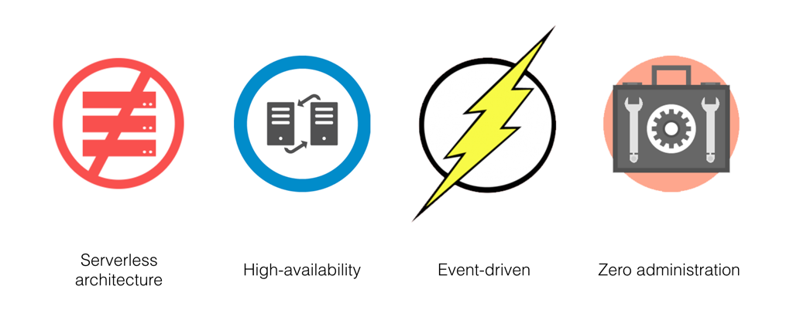

What is Serverless Computing!?
Serverless lets you write and deploy code without the hassle of managing the underlying infrastructure. It enhances developer productivity by helping focus on what matters the most — building great applications and abstracting away the rest. Zero server management, no upfront provisioning, auto-scaling to meet traffic demands, and paying only for the resources used are just some of the benefits of serverless computing.
What serverless options are there for me?
- Azure Functions
- Google Serverless Computing
- AWS Lambda 
Today, Microsoft is announcing Azure Functions. Azure Functions is an event driven, compute-on-demand experience that extends the existing Azure application platform with capabilities to implement code triggered by events occurring in Azure or third party service as well as on-premises systems. Azure Functions allows developers to take action by connecting to data sources or messaging solutions thus making it easy to process and react to events. Developers can leverage Azure Functions to build HTTP-based API endpoints accessible by a wide range of applications, mobile and IoT devices. Azure Functions is scale-based and on-demand, so you pay only for the resources you consume.
Google serverless option is another way of providing a compute-on-demand expierence that extensions Google Engine applications. This allows for easily flexable and managable code which can easily be scaled. Google Enginges can quickly react to problems in case of emergencys!
AWS Lambda is a compute service that lets you run code without provisioning or managing servers. AWS Lambda executes your code only when needed and scales automatically, from a few requests per day to thousands per second. You pay only for the compute time you consume - there is no charge when your code is not running. With AWS Lambda, you can run code for virtually any type of application or backend service - all with zero administration. AWS Lambda runs your code on a high-availability compute infrastructure and performs all of the administration of the compute resources, including server and operating system maintenance, capacity provisioning and automatic scaling, code monitoring and logging. All you need to do is supply your code in one of the languages that AWS Lambda supports (currently Node.js, Java, C#, Go and Python).
You can use AWS Lambda to run your code in response to events, such as changes to data in an Amazon S3 bucket or an Amazon DynamoDB table; to run your code in response to HTTP requests using Amazon API Gateway; or invoke your code using API calls made using AWS SDKs. With these capabilities, you can use Lambda to easily build data processing triggers for AWS services like Amazon S3 and Amazon DynamoDB, process streaming data stored in Kinesis, or create your own back end that operates at AWS scale, performance, and security.
You can also build serverless applications composed of functions that are triggered by events and automatically deploy them using AWS CodePipeline and AWS CodeBuild. For more information, see AWS Lambda Applications.
For more information about the AWS Lambda execution environment, see Lambda Execution Environment and Available Libraries. For information about how AWS Lambda determines compute resources required to execute your code, see Basic AWS Lambda Function Configuration.